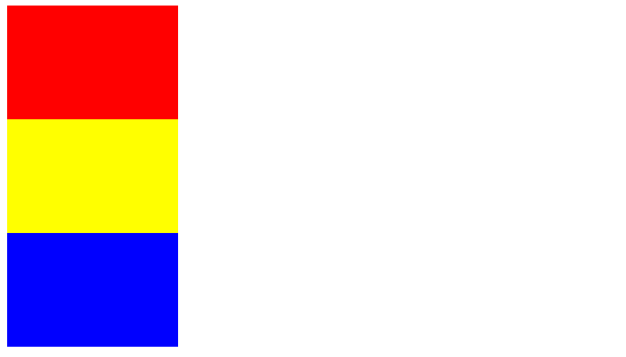
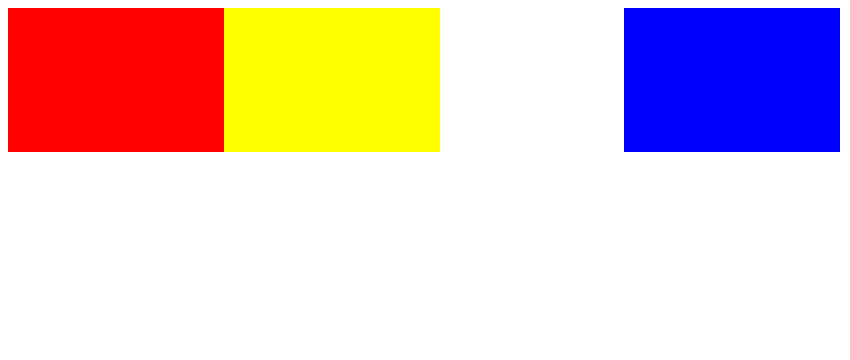
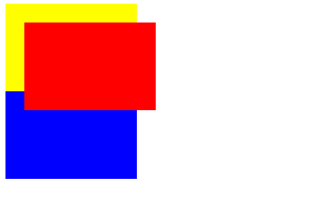

CSS提供3种定位方式，分别为普通流，浮动定位和绝对定位。
普通流就是根据源码里标签的顺序，自然形成的定位流，换句话说，在一个HTML文件里不写任何关于定位的CSS，那就默认是普通流定位。
浮动定位的元素就像飘在水上的木桶，给它指定一个方向，它就会顺着票，直到被其他元素的边框挡住，才会停下来。
绝对定位的元素会脱离出文档流，就像一个天外来客，给它指定一个坐标，它就会死死的呆在那里，同时由于它不属于文档流，所以很可能会和其他文档流内的元素重叠。
例1：用div标签生成3个元素块，让它们按普通流定位方式排列（如图）。

解释：为了方便观察，我们去掉了div的边框，设置了大小，并且涂上了背景颜色。
步骤：
CSSExample1.html
我们可以看到，只要在body里按顺序写下3个div标签，它们就会自动按顺序排列好，由于div的display属性默认是block，因此会自动占满一行，导致下一个div自动换行。
如果你不希望div自动换行，你可以更改它的display属性为inline-block。这里就不写出例子了。
例2：用div标签生成3个元素块，让它们按浮动定位方式排列（如图）。

解释：用于控制浮动定位的属性float，它的默认值是none。
步骤：
CSSExample2.html
红色div第一个开始浮动，它向左直到碰到了body的左边框，才停下来。
黄色div第二个开始浮动，它向左直到碰到了红色div的右边框，才停下来。
蓝色div第三个开始浮动，它向右直到碰到了body的右边框，才停下来。
即使它们的display属性是block，但是只要float属性不是none，display属性就会被浏览器忽略（除非你把display也设置成none）。因此不会自动换行。
例3：用div标签生成3个元素块，让红色块按绝对定位方式排列（如图）。

解释：用于控制浮动定位的属性position，它的默认值是static。
步骤：
CSSExample3.html
如果position的值为static，那么top和left属性将被忽略。
可以看到红色框覆盖到了普通流定位的另外俩个框上面，它们重叠了。
如果你希望红色框被覆盖，你可以调整它的z-index属性为-1。
好啦，这一节就到这里，我们来总结一下：